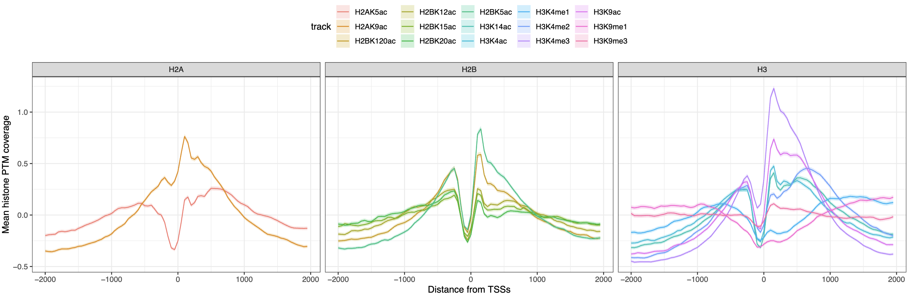

Introduction to CoverageExperiment
Jacques Serizay
Institut Pasteur, Parisjacques.serizay@pasteur.fr
26 November 2023
Source:vignettes/CoverageExperiment.Rmd
CoverageExperiment.RmdNew classes
CoverageExperiment
library(CoverageExperiment)
#> Loading required package: SummarizedExperiment
#> Loading required package: MatrixGenerics
#> Loading required package: matrixStats
#>
#> Attaching package: 'MatrixGenerics'
#> The following objects are masked from 'package:matrixStats':
#>
#> colAlls, colAnyNAs, colAnys, colAvgsPerRowSet, colCollapse,
#> colCounts, colCummaxs, colCummins, colCumprods, colCumsums,
#> colDiffs, colIQRDiffs, colIQRs, colLogSumExps, colMadDiffs,
#> colMads, colMaxs, colMeans2, colMedians, colMins, colOrderStats,
#> colProds, colQuantiles, colRanges, colRanks, colSdDiffs, colSds,
#> colSums2, colTabulates, colVarDiffs, colVars, colWeightedMads,
#> colWeightedMeans, colWeightedMedians, colWeightedSds,
#> colWeightedVars, rowAlls, rowAnyNAs, rowAnys, rowAvgsPerColSet,
#> rowCollapse, rowCounts, rowCummaxs, rowCummins, rowCumprods,
#> rowCumsums, rowDiffs, rowIQRDiffs, rowIQRs, rowLogSumExps,
#> rowMadDiffs, rowMads, rowMaxs, rowMeans2, rowMedians, rowMins,
#> rowOrderStats, rowProds, rowQuantiles, rowRanges, rowRanks,
#> rowSdDiffs, rowSds, rowSums2, rowTabulates, rowVarDiffs, rowVars,
#> rowWeightedMads, rowWeightedMeans, rowWeightedMedians,
#> rowWeightedSds, rowWeightedVars
#> Loading required package: GenomicRanges
#> Loading required package: stats4
#> Loading required package: BiocGenerics
#>
#> Attaching package: 'BiocGenerics'
#> The following objects are masked from 'package:stats':
#>
#> IQR, mad, sd, var, xtabs
#> The following objects are masked from 'package:base':
#>
#> anyDuplicated, aperm, append, as.data.frame, basename, cbind,
#> colnames, dirname, do.call, duplicated, eval, evalq, Filter, Find,
#> get, grep, grepl, intersect, is.unsorted, lapply, Map, mapply,
#> match, mget, order, paste, pmax, pmax.int, pmin, pmin.int,
#> Position, rank, rbind, Reduce, rownames, sapply, setdiff, table,
#> tapply, union, unique, unsplit, which.max, which.min
#> Loading required package: S4Vectors
#>
#> Attaching package: 'S4Vectors'
#> The following object is masked from 'package:utils':
#>
#> findMatches
#> The following objects are masked from 'package:base':
#>
#> expand.grid, I, unname
#> Loading required package: IRanges
#> Loading required package: GenomeInfoDb
#> Loading required package: Biobase
#> Welcome to Bioconductor
#>
#> Vignettes contain introductory material; view with
#> 'browseVignettes()'. To cite Bioconductor, see
#> 'citation("Biobase")', and for packages 'citation("pkgname")'.
#>
#> Attaching package: 'Biobase'
#> The following object is masked from 'package:MatrixGenerics':
#>
#> rowMedians
#> The following objects are masked from 'package:matrixStats':
#>
#> anyMissing, rowMedians
showClass("CoverageExperiment")
#> Class "CoverageExperiment" [package "CoverageExperiment"]
#>
#> Slots:
#>
#> Name: rowRanges colData
#> Class: GenomicRanges_OR_GRangesList DataFrame
#>
#> Name: assays NAMES
#> Class: Assays_OR_NULL character_OR_NULL
#>
#> Name: elementMetadata metadata
#> Class: DataFrame list
#>
#> Extends:
#> Class "RangedSummarizedExperiment", directly
#> Class "SummarizedExperiment", by class "RangedSummarizedExperiment", distance 2
#> Class "RectangularData", by class "RangedSummarizedExperiment", distance 3
#> Class "Vector", by class "RangedSummarizedExperiment", distance 3
#> Class "Annotated", by class "RangedSummarizedExperiment", distance 4
#> Class "vector_OR_Vector", by class "RangedSummarizedExperiment", distance 4
data(ce)
ce
#> class: CoverageExperiment
#> dim: 1 2
#> metadata(0):
#> assays(1): coverage
#> rownames(1): Scc1
#> rowData names(1): features
#> colnames(2): RNA_fwd RNA_rev
#> colData names(1): track
#> width: 3000
rowData(ce)
#> DataFrame with 1 row and 1 column
#> features
#> <character>
#> Scc1 Scc1
rowRanges(ce)
#> GRangesList object of length 1:
#> $Scc1
#> GRanges object with 614 ranges and 2 metadata columns:
#> seqnames ranges strand | name score
#> <Rle> <IRanges> <Rle> | <character> <numeric>
#> [1] II 234992-237991 + | YBL002W 0
#> [2] II 226136-229135 + | YBL004W 0
#> [3] II 215970-218969 + | YBL005W 0
#> [4] II 219830-222829 + | YBL005W-B 0
#> [5] II 215211-218210 + | YBL006W-A 0
#> ... ... ... ... . ... ...
#> [610] IV 1506505-1509504 + | YDR536W 0
#> [611] IV 1509402-1512401 + | YDR538W 0
#> [612] IV 1510594-1513593 + | YDR539W 0
#> [613] IV 1521749-1524748 + | YDR542W 0
#> [614] IV 1524821-1527820 + | YDR545W 0
#> -------
#> seqinfo: 3 sequences from an unspecified genome
colData(ce)
#> DataFrame with 2 rows and 1 column
#> track
#> <character>
#> RNA_fwd RNA_fwd
#> RNA_rev RNA_rev
assays(ce)
#> List of length 1
#> names(1): coverage
assay(ce, 'coverage')
#> RNA_fwd RNA_rev
#> Scc1 numeric,1842000 numeric,1842000
assay(ce[1, 1], 'coverage')
#> RNA_fwd
#> Scc1 numeric,1842000
AggregatedCoverage
showClass("AggregatedCoverage")
#> Class "AggregatedCoverage" [package "CoverageExperiment"]
#>
#> Slots:
#>
#> Name: rowRanges colData
#> Class: GenomicRanges_OR_GRangesList DataFrame
#>
#> Name: assays NAMES
#> Class: Assays_OR_NULL character_OR_NULL
#>
#> Name: elementMetadata metadata
#> Class: DataFrame list
#>
#> Extends:
#> Class "RangedSummarizedExperiment", directly
#> Class "SummarizedExperiment", by class "RangedSummarizedExperiment", distance 2
#> Class "RectangularData", by class "RangedSummarizedExperiment", distance 3
#> Class "Vector", by class "RangedSummarizedExperiment", distance 3
#> Class "Annotated", by class "RangedSummarizedExperiment", distance 4
#> Class "vector_OR_Vector", by class "RangedSummarizedExperiment", distance 4
data(ac)
ac
#> class: AggregatedCoverage
#> dim: 1 2
#> metadata(0):
#> assays(8): mean median ... ci_low ci_high
#> rownames(1): Scc1
#> rowData names(1): features
#> colnames(2): RNA_fwd RNA_rev
#> colData names(1): track
#> width: 3000
#> binning: 1
rowData(ac)
#> DataFrame with 1 row and 1 column
#> features
#> <character>
#> Scc1 Scc1
rowRanges(ac)
#> GRangesList object of length 1:
#> $Scc1
#> GRanges object with 614 ranges and 2 metadata columns:
#> seqnames ranges strand | name score
#> <Rle> <IRanges> <Rle> | <character> <numeric>
#> [1] II 234992-237991 + | YBL002W 0
#> [2] II 226136-229135 + | YBL004W 0
#> [3] II 215970-218969 + | YBL005W 0
#> [4] II 219830-222829 + | YBL005W-B 0
#> [5] II 215211-218210 + | YBL006W-A 0
#> ... ... ... ... . ... ...
#> [610] IV 1506505-1509504 + | YDR536W 0
#> [611] IV 1509402-1512401 + | YDR538W 0
#> [612] IV 1510594-1513593 + | YDR539W 0
#> [613] IV 1521749-1524748 + | YDR542W 0
#> [614] IV 1524821-1527820 + | YDR545W 0
#> -------
#> seqinfo: 3 sequences from an unspecified genome
colData(ac)
#> DataFrame with 2 rows and 1 column
#> track
#> <character>
#> RNA_fwd RNA_fwd
#> RNA_rev RNA_rev
assays(ac)
#> List of length 8
#> names(8): mean median min max sd se ci_low ci_high
assay(ac, 'mean')
#> RNA_fwd RNA_rev
#> Scc1 numeric,3000 numeric,3000
assay(ac[1, 1], 'mean')
#> RNA_fwd
#> Scc1 numeric,3000Creating CoverageExperiment and
AggregatedCoverage classes
Creating a CoverageExperiment object
library(rtracklayer)
bw_file <- system.file("extdata", "MNase.bw", package = "CoverageExperiment")
bed_file <- system.file("extdata", "TSSs.bed", package = "CoverageExperiment")
CE <- CoverageExperiment(
tracks = import(bw_file, as = "Rle"),
features = import(bed_file),
width = 3000, scale = TRUE, center = TRUE
)
CE
#> class: CoverageExperiment
#> dim: 1 1
#> metadata(0):
#> assays(1): coverage
#> rownames(1): features
#> rowData names(1): features
#> colnames(1): track
#> colData names(1): track
#> width: 3000Aggregating a CoverageExperiment into an
AggregatedCoverage object
AC <- aggregate(CE)
AC
#> class: AggregatedCoverage
#> dim: 1 1
#> metadata(0):
#> assays(8): mean median ... ci_low ci_high
#> rownames(1): features
#> rowData names(1): features
#> colnames(1): track
#> colData names(1): track
#> width: 3000
#> binning: 1
AC10 <- aggregate(CE, bin = 10)
AC10
#> class: AggregatedCoverage
#> dim: 1 1
#> metadata(0):
#> assays(8): mean median ... ci_low ci_high
#> rownames(1): features
#> rowData names(1): features
#> colnames(1): track
#> colData names(1): track
#> width: 3000
#> binning: 10
CoverageExperiment over multiple tracks / feature
sets
library(purrr)
#>
#> Attaching package: 'purrr'
#> The following object is masked from 'package:GenomicRanges':
#>
#> reduce
#> The following object is masked from 'package:IRanges':
#>
#> reduce
#> The following object is masked from 'package:base':
#>
#> %||%
library(plyranges)
#>
#> Attaching package: 'plyranges'
#> The following object is masked from 'package:IRanges':
#>
#> slice
#> The following object is masked from 'package:stats':
#>
#> filter
# ~~~~~~~~~~~~~~~ Import genomic features into a named list ~~~~~~~~~~~~~~~ #
features <- list(
TSSs = system.file("extdata", "TSSs.bed", package = "CoverageExperiment"),
`Convergent transcription` = system.file("extdata", "conv_transcription_loci.bed", package = "CoverageExperiment")
) |> map(import) |> map(filter, strand == '+')
# ~~~~~~~~~~~~~~~ Import coverage tracks into a named list ~~~~~~~~~~~~~~~ #
tracks <- list(
Scc1 = system.file("extdata", "Scc1.bw", package = "CoverageExperiment"),
RNA_fwd = system.file("extdata", "RNA.fwd.bw", package = "CoverageExperiment"),
RNA_rev = system.file("extdata", "RNA.rev.bw", package = "CoverageExperiment"),
PolII = system.file("extdata", "PolII.bw", package = "CoverageExperiment"),
MNase = system.file("extdata", "MNase.bw", package = "CoverageExperiment")
) |> map(import, as = 'Rle')
# ~~~~~~~~~~~~~~~ Compute aggregated coverage ~~~~~~~~~~~~~~~ #
CE <- CoverageExperiment(tracks, features, width = 5000, scale = TRUE, center = TRUE)
CE
#> class: CoverageExperiment
#> dim: 2 5
#> metadata(0):
#> assays(1): coverage
#> rownames(2): TSSs Convergent transcription
#> rowData names(1): features
#> colnames(5): Scc1 RNA_fwd RNA_rev PolII MNase
#> colData names(1): track
#> width: 5000
AC <- aggregate(CE)
AC
#> class: AggregatedCoverage
#> dim: 2 5
#> metadata(0):
#> assays(8): mean median ... ci_low ci_high
#> rownames(2): TSSs Convergent transcription
#> rowData names(1): features
#> colnames(5): Scc1 RNA_fwd RNA_rev PolII MNase
#> colData names(1): track
#> width: 5000
#> binning: 1Plotting aggregated coverages with ggplot2
library(ggplot2)
p <- as_tibble(AC) |>
ggplot(aes(x = coord, y = mean)) +
geom_ribbon(aes(ymin = ci_low, ymax = ci_high, fill = track), alpha = 0.2) +
geom_line(aes(col = track)) +
facet_grid(features ~ .) +
labs(x = 'Distance from genomic feature', y = 'Mean coverage') +
theme_bw() +
theme(legend.position = 'top')Using a tidy grammar
library(tidySummarizedExperiment)
#> Loading required package: ttservice
#>
#> Attaching package: 'tidySummarizedExperiment'
#> The following object is masked from 'package:ttservice':
#>
#> plot_ly
AC
#> # An AggregatedCoverage-tibble abstraction: 50000 × 11
#> # features=2 | tracks=5 | assays=mean, median, min, max, sd, se, ci_low,
#> # ci_high
#> # width=5000 | binning=1
#> track features coord mean median min max sd se ci_low ci_high
#> <chr> <chr> <dbl> <dbl> <dbl> <dbl> <dbl> <dbl> <dbl> <dbl> <dbl>
#> 1 Scc1 TSSs -2500 0.0827 -0.381 -2.15 7.28 1.36 0.0460 -7.62e-3 0.173
#> 2 Scc1 TSSs -2499 0.0872 -0.391 -2.13 7.28 1.36 0.0462 -3.50e-3 0.178
#> 3 Scc1 TSSs -2498 0.0891 -0.391 -2.13 7.28 1.36 0.0462 -1.64e-3 0.180
#> 4 Scc1 TSSs -2497 0.0888 -0.392 -2.13 7.16 1.35 0.0459 -1.27e-3 0.179
#> 5 Scc1 TSSs -2496 0.0901 -0.391 -2.13 7.16 1.35 0.0458 8.76e-5 0.180
#> 6 Scc1 TSSs -2495 0.0862 -0.392 -2.13 6.38 1.33 0.0452 -2.62e-3 0.175
#> 7 Scc1 TSSs -2494 0.0832 -0.398 -2.13 6.38 1.34 0.0455 -6.10e-3 0.173
#> 8 Scc1 TSSs -2493 0.0804 -0.402 -2.13 6.38 1.34 0.0454 -8.68e-3 0.169
#> 9 Scc1 TSSs -2492 0.0825 -0.397 -2.13 6.38 1.34 0.0454 -6.67e-3 0.172
#> 10 Scc1 TSSs -2491 0.0804 -0.397 -2.13 6.38 1.33 0.0451 -8.09e-3 0.169
#> # ℹ 49,990 more rows
AC |>
filter(track != 'Scc1') |>
filter(features == 'Convergent transcription') |>
ggplot(aes(x = coord, y = mean)) +
geom_ribbon(aes(ymin = ci_low, ymax = ci_high, fill = track), alpha = 0.2) +
geom_line(aes(col = track)) +
facet_grid(track ~ .) +
labs(x = 'Distance from locus of convergent transcription', y = 'Mean coverage') +
theme_bw() +
theme(legend.position = 'top')
Coarsening the aggregated coverage statistics
AC2 <- S4Vectors::aggregate(CE, bin = 200)
AC2 |>
filter(track != 'Scc1') |>
filter(features == 'Convergent transcription') |>
ggplot(aes(x = coord, y = mean)) +
geom_ribbon(aes(ymin = ci_low, ymax = ci_high, fill = track), alpha = 0.2) +
geom_line(aes(col = track)) +
geom_point(aes(col = track)) +
facet_grid(track ~ .) +
labs(x = 'Distance from locus of convergent transcription', y = 'Mean coverage') +
theme_bw() +
theme(legend.position = 'top')
Example use case: AnnotationHub and TxDb
resources
Recovering TSSs of forward human genes
txdb <- TxDb.Hsapiens.UCSC.hg19.knownGene::TxDb.Hsapiens.UCSC.hg19.knownGene
TSSs <- GenomicFeatures::genes(txdb) |>
filter(strand == '+') |>
anchor_5p() |>
mutate(width = 1)
#> 403 genes were dropped because they have exons located on both strands
#> of the same reference sequence or on more than one reference sequence,
#> so cannot be represented by a single genomic range.
#> Use 'single.strand.genes.only=FALSE' to get all the genes in a
#> GRangesList object, or use suppressMessages() to suppress this message.Recovering H3K4me3 coverage track from ENCODE
library(AnnotationHub)
#> Loading required package: BiocFileCache
#> Loading required package: dbplyr
#>
#> Attaching package: 'dbplyr'
#> The following objects are masked from 'package:dplyr':
#>
#> ident, sql
#>
#> Attaching package: 'AnnotationHub'
#> The following object is masked from 'package:rtracklayer':
#>
#> hubUrl
#> The following object is masked from 'package:Biobase':
#>
#> cache
ah <- AnnotationHub()
ah['AH34904']
#> AnnotationHub with 1 record
#> # snapshotDate(): 2023-11-08
#> # names(): AH34904
#> # $dataprovider: BroadInstitute
#> # $species: Homo sapiens
#> # $rdataclass: BigWigFile
#> # $rdatadateadded: 2015-05-07
#> # $title: UCSD.H1.H3K4me3.LL227.fc.signal.bigwig
#> # $description: Bigwig File containing fold enrichment signal tracks from Ep...
#> # $taxonomyid: 9606
#> # $genome: hg19
#> # $sourcetype: BigWig
#> # $sourceurl: http://egg2.wustl.edu/roadmap/data/byFileType/signal/unconsoli...
#> # $sourcesize: 97131347
#> # $tags: c("EpigenomeRoadMap", "signal", "unconsolidated",
#> # "foldChange", "NA")
#> # retrieve record with 'object[["AH34904"]]'
H3K4me3_bw <- ah[['AH34904']]
#> loading from cacheComputing the aggregated coverage of H3K4me3 ± 3kb around the TSSs of forward human genes
CE <- CoverageExperiment(
import(H3K4me3_bw, as = 'Rle'),
TSSs,
width = 6000,
scale = TRUE, center = TRUE
)
AC <- aggregate(CE)
ggplot(AC, aes(x = coord, y = mean)) +
geom_ribbon(aes(ymin = ci_low, ymax = ci_high, fill = track), alpha = 0.2) +
geom_line(aes(col = track)) +
facet_grid(track ~ .) +
labs(x = 'Distance from TSSs', y = 'Mean coverage') +
theme_bw() +
theme(legend.position = 'top')
With more genomic tracks
# ~~~~~~~~~~ Recover 15 different histone PTM ChIP-seq tracks ~~~~~~~~~~ #
ids <- c(
'AH35163', 'AH35165', 'AH35167', 'AH35170', 'AH35173', 'AH35176',
'AH35178', 'AH35180', 'AH35182', 'AH35185', 'AH35187', 'AH35189',
'AH35191', 'AH35193', 'AH35196'
)
names(ids) <- mcols(ah[ids])$title |>
gsub(".*IMR90.", "", x = _) |>
gsub("\\..*", "", x = _)
bws <- map(ids, ~ ah[[.x]]) |>
map(resource) |>
BigWigFileList()
names(bws) <- names(ids)
# ~~~~~~~~~~ Computing coverage over TSSs ~~~~~~~~~~ #
CE <- CoverageExperiment(
bws, TSSs,
width = 4000,
scale = TRUE, center = TRUE
)
# ~~~~~~~~~~ Aggregate coverages ~~~~~~~~~~ #
AC <- aggregate(CE, 50)
# ~~~~~~~~~~ Plot the resulting AggregatedCoverage object ~~~~~~~~~~ #
AC$histone <- case_when(
stringr::str_detect(AC$track, 'H2A') ~ "H2A",
stringr::str_detect(AC$track, 'H2B') ~ "H2B",
stringr::str_detect(AC$track, 'H3') ~ "H3"
)
p <- AC |>
ggplot(aes(x = coord, y = mean)) +
geom_ribbon(aes(ymin = ci_low, ymax = ci_high, fill = track), alpha = 0.2) +
geom_line(aes(col = track)) +
facet_grid(~histone) +
labs(x = 'Distance from TSSs', y = 'Mean histone PTM coverage') +
theme_bw() +
theme(legend.position = 'top')